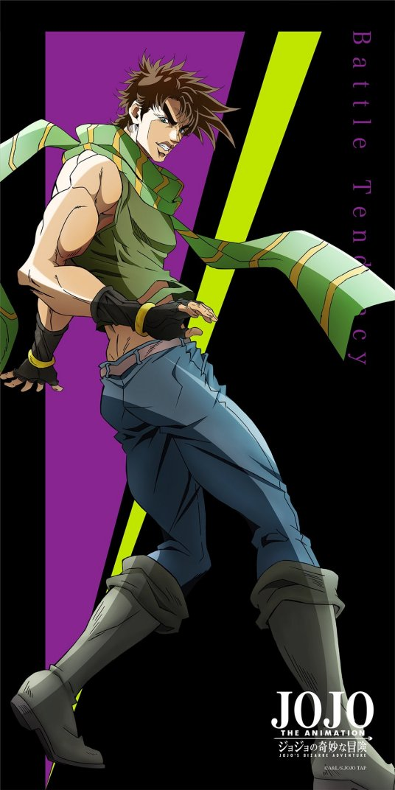

杀手皇后--败者食尘

角色形象JOJO第二代主人公乔瑟夫·乔斯达,他的身份是乔纳森·乔斯达的孙子。 他所面对的敌人：柱之男，是制造了石鬼面的远古时代的超级生物，也是战斗的生物。这些敌人不仅有着强悍的肉体，而且有着罗马时代战士的思维和精神。可以说，乔瑟夫的故事是一部发生在古代帝国废墟上的，现代英雄与古代英雄战斗的伟大史诗，这种铁与血、灵与肉的搏击，正是乔瑟夫时代的主题。 角色能力以波纹弹出可乐瓶盖打击对手 将修特罗海姆的头发拔下来，并使其硬化来抵挡子弹 波纹强化玻璃杯反射空裂眼刺惊 将波纹灌入墨鱼面後弹出去，击中的话面会因为被波纹黏住而很难拿下来 用波纹在水面上行走 波纹钢珠旋风 钢珠旋风的应用技，以两串钢珠做配合，将钢珠配置於对手背後之後，让钢珠回旋著飞回来从後方攻击。 钢珠回旋 以特制的钢铁美国钢珠作为施展波纹的媒介，目的为在靠钢珠本身的破坏力破坏对手表皮後，再将波纹传导入对手体内。 毛线结界 以波纹传导率高的毛线做为施展波纹的媒介，毛线能发挥得十分灵活，靠毛线布下复杂的结界後，配合魔术技巧与诈术，便能够以一口气包围落入结界中的目标。 替身能力
|
 |